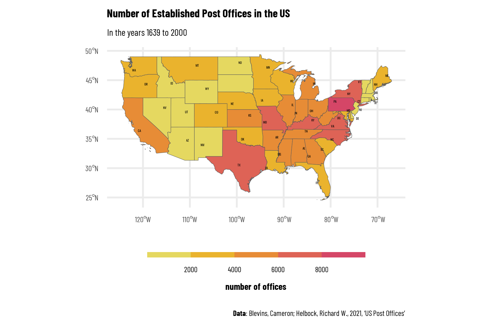
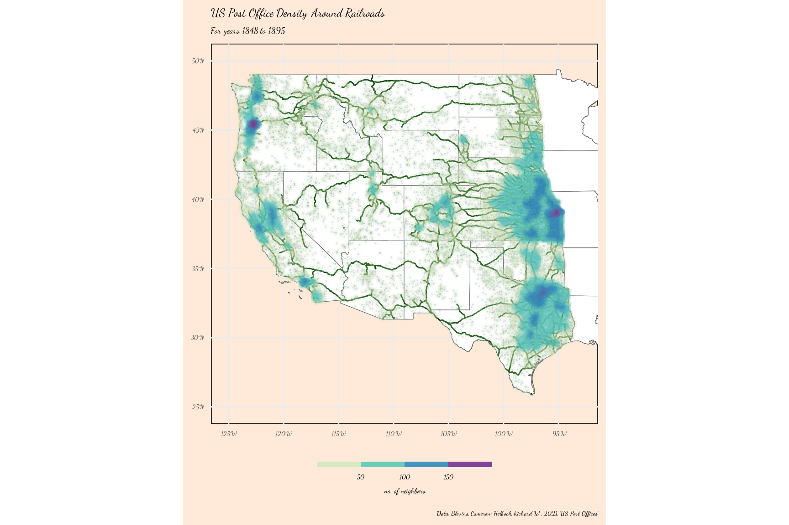

US Post Offices
## Tidy Tuesday
This is my second contribution to TidyTuesday, which is ‘a weekly podcast and community activity brought to you by the R4DS Online Learning Community’. Their goal is to help R learners learn in real-world contexts.
For more information, visit the TidyTuesday homepage, check out their GitHub repository and follow the R4DS Learning Community on Twitter.
US Post Office Data Set
This week’s data originates from Cameron Blevins and Richard W. Helbock. It covers information on US Post Offices established between 1639 and 2000. It allows to track the development of Post Offices in the US over time.
US Post Offices Scatter
One could obtain a first idea about the data by regarding a scatter plot of the Post Offices over the whole time horizon:
Generally, more post offices are located in the east of the US than in the west. \(32\%\) of the points are randomly located within their corresponding county, because no exact geocoding is available. Because it is more important here to illustrate the number of observations and the rough locational distribution, we do include the randomly located offices.
Number of established Post Offices in each state
To gain a further overview over the overall distribution of offices, I first regard the number of established Post Offices in each state:

The coordinates of the states’ labels would need some more fixing. It is apparent that the majority of post offices is accumulated in the coastal regions and densely populated areas.
Density of US Post Offices Along railroads
Railroads played an important role in the context of expansion of colonies especially in the 19th century. The following plot demonstrates this.

The highest density of Post Offices is close to good infrastructure in terms of railroads.
References
Main data set:
Blevins, Cameron; Helbock, Richard W., 2021, “US Post Offices”, https://doi.org/10.7910/DVN/NUKCNA, Harvard Dataverse, V1, UNF:6:8ROmiI5/4qA8jHrt62PpyA== [fileUNF]
Railroad network:
Jeremy Atack, “Historical Geographic Information Systems (GIS) database of U.S. Railroads for 1848 to 1895”
Full R code available at https://github.com/jgranna/tidytuesday